最终可以看到刻度类型变成双向显示。

作者：创世魂
● 位置(写)
帮助文档如下图：
通过本属性可以设置当前滑块的位置，有效范围在0到32672之间。
同名的读属性可以读取当前滑块的位置。
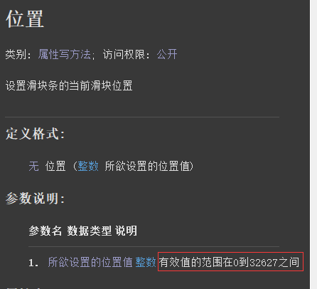
代码编写如下图：
按钮1点击后设置位置为5，按钮2点击后读取位置。
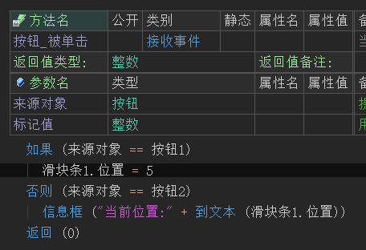
运行效果如下图：
最终可看到滑块位置被成功设置和读取。
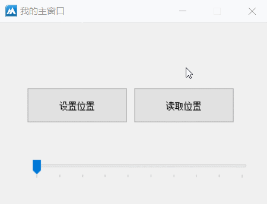
● 刻度类型(写)
帮助文档如下图：
通过本属性可以设置刻度类型，在“滑块条刻度类型”中共有四个常量类型。
分别为：上或左，下或右，双向，无。 注意：本属性只能在属性表格中设置。
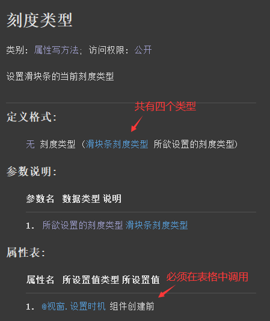
代码编写如下图：
在滑块条的属性栏中填写本属性并选择“双向”刻度类型。
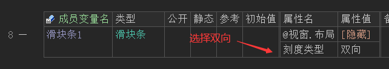
运行效果如下图：
最终可以看到刻度类型变成双向显示。
● 单位刻度值(写)
帮助文档如下图：
通过本属性可修改当前组件的单位刻度值，默认刻度值为1。
注意：属性值必须大于0。
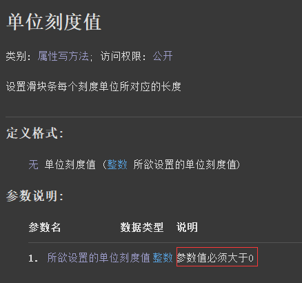
代码编写如下图：
按钮点击后修改本属性值为2。
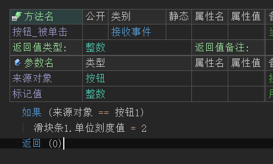
运行效果如下图：
最终可看到当前组件的单位刻度值发生变化。
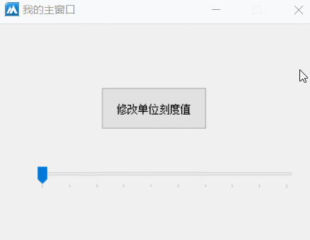
● 方向(写)
帮助文档如下图：
通过本属性可设置当前滑块条组件的滑动方向，默认为横向，可通过本属性值调整为纵向。
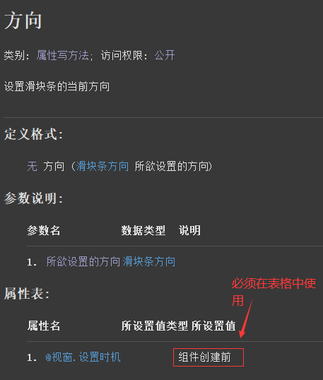
代码编写如下图：
在组件的属性栏设置本属性值为“纵向”。
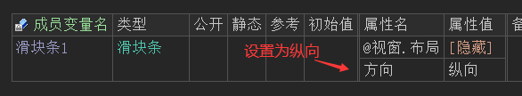
运行效果如下图：
最终运行后可看到滑块条变成了纵向显示。
● 最大位置(写)
“最大位置”帮助文档如下图：
通过本属性可以设置滑块条最大可滑动位置，默认为10。
注意：最大不能超过32627。
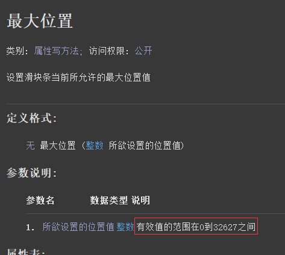
“位置被改变”帮助文档如下图：
当滑块条的位置被改变的时候将会触发本事件。
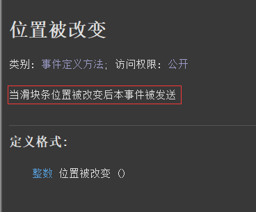
代码编写如下图：
1、首先添加“位置被改变”事件，并取出当前位置显示在标签上。
2、 按钮被点击后设置“最大位置”为50。
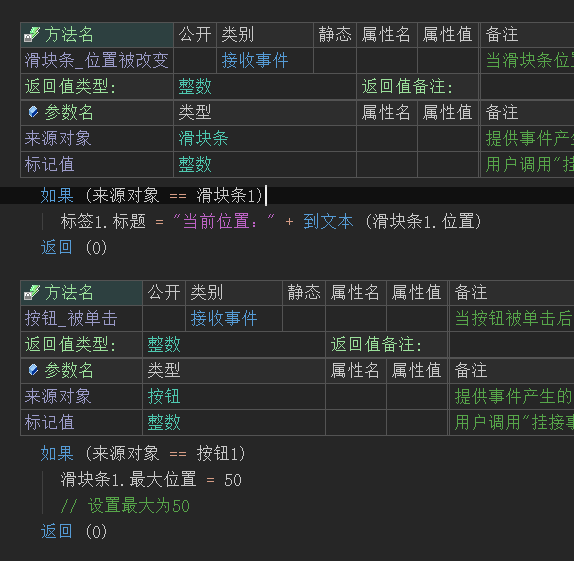
运行效果如下图：
最终按钮点击后，滑块条的最大位置会由10变成50。
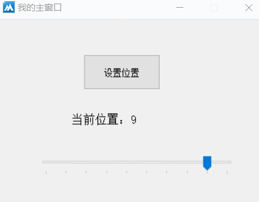
● 最小位置(写)
帮助文档如下图：
通过本属性可设置当前组件的最小滑动位置，默认为1。
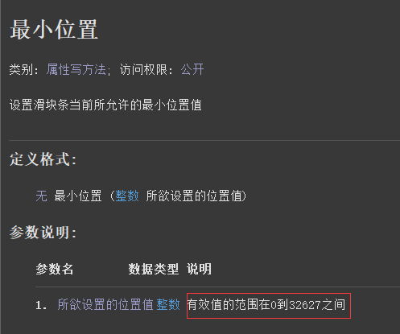
代码编写如下图：
1、首先添加“位置被改变”事件，并取出当前位置显示在标签上。
2、 按钮被点击后设置“最小位置”为3。
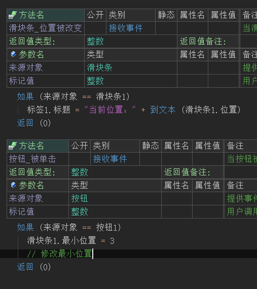
运行效果如下图：
按钮点击后，滑块的最小位置从1被修改成了3。
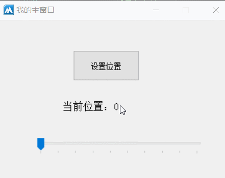
● 置刻度范围
帮助文档如下图：
通过本方法可同时设置滑块条最小和最大位置。
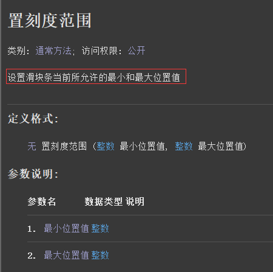
代码编写如下图：
添加主窗口的“创建完毕”事件，调用本方法设置刻度范围。
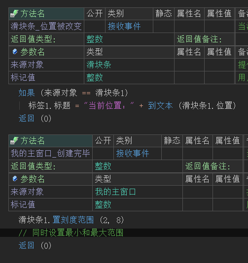
运行效果如下图：
最终可看到滑块条最小、最大位置和代码中设置的位置一致。
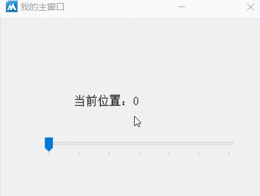